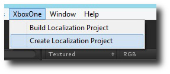
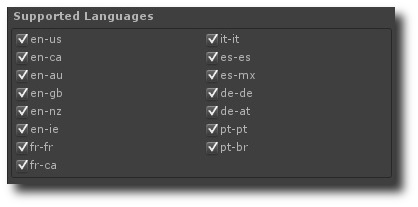
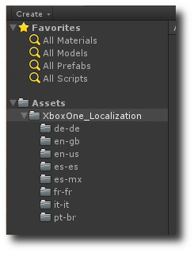
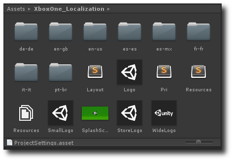
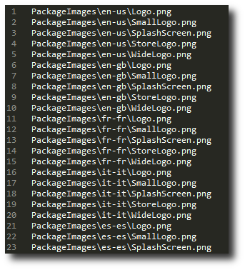
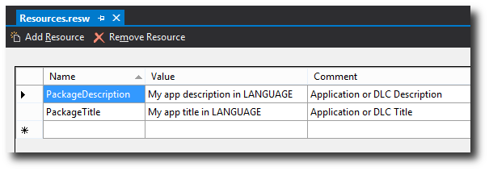
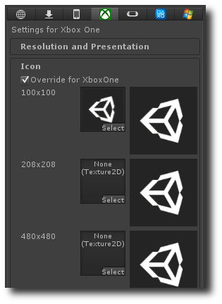

Manifest Localization
Localizing your application is different from localizing your Manifest. Your application is executing on the Unity runtime and thus has full access to the standard Unity localization tools.
- While you can call Application.systemLanguage to determine the language the console has been set to, en-US is the default language.
- If you have not explicitly stated that your title supports a given language in your application manifest, Application.systemLanguage will return English as the Xbox One will return en-US when queried.
- This is a design characteristic of the Xbox One and we cannot work around it at this time.
Your applications manifest however, represents the parts of your application that are visible to the user without having launched your application. As such the manifest uses the consoles own packaging tools to generate a localized representation. This representation includes the following pieces:

The Manifest localization pipeline is a function of how the console works and the tools that Microsoft has provided. The pipeline is documented and maintained by Microsoft and there is a great deal of Xbox One documentation on the subject. Some information can be found under the headings Localizing Exclusive App DLC or Localizing Application Manifest Resources in the Microsoft documentation. There are three fundamental pieces to localizing your manifest:
- Resources.pri - for localized text and a directory of localized images.
- Icons - A per language folder structure that provides per language variants of the key icons.
- AppXManifest.xml - Your games manifest needs to be modified to reference your strings.
Unity has a simplistic Manifest localization project that you can include in your application. Creating a project is accessed through the Xbox One menu:

This menu item will use the Supported Languages that you have selected in the Publisher section of your Player settings to generate placeholder data for the languages you have selected. Notice that I have selected all available languages here, you do not need to do this, the localization pipeline supports a mechanism for falling back on a default set of strings and icons when the console is set to a language you do not naturally support.

The resulting data is all contained in a folder called XboxOne_Localization. The folder has a sub-folder per language and a set of defaults in the root of the folder. Notice that there is not a 1:1 mapping between the languages selected in the Supported Languages panel and the language folders that were generated.

For Manifest purposes, languages map to several general buckets as follows. This table may be out of date, please refer to the Microsoft documentation for more details.
| pt-br | pt-br pt-pt | Brazil |
| fr-fr | fr-fr fr-ca | France, Canada |
| de-de | de-de de-at | Germany, Austria |
| it-it | it-it | Italy |
| es-mx | es-mx | Mexico |
| es-es | es-es | Spain |
| en-gb | en-gb en-ca en-au en-nz | United Kingdom, Canada, Australia, New Zealand |
| en-us | en-us | United States |
The XboxOne_Localization folder will contain something as follows. For applications you should find:
- Layout.resfiles, Pri.resfiles, Resources.resfiles - These are all generated build system pieces and you can ignore these files.
- Resources.resw - You will find one of these in each language folder, the file in the root contains your default set used when the console is set to a language your application does not support.
- *.png - A set of PNG icons that are your default set of icons that will be used for your application when the console is set to a language you do not support or when you are missing the language specific folder for a language.

You must now do 2 things:
- Replace each of the placeholder png files with language friendly variants for your application.
- Edit the Resources.resw files with language specific strings for your application.
Icons
If you do not want to localize a set of icons for a language, you can simply delete the language specific variants of those icons. If you do, you need to remove the icon set from your layout.resfiles before rebuilding. This should cause the system to fall back on the default icon set in the root folder. Please leave the PackageImages prefix, when staging your application unity moves all your images into a PackageImages subfolder and references this in your manifest. This keeps the package folder structure relatively clean.

Title and Description
Strings live in Visual Studio friendly *.resw files. These files can be opened with Visual Studio and the editor should look something as follows:

Unity uses 2 default keys. These are:
- PackageDescription
- PackageTitle
You need to replace these values with language specific versions in each Resources.resw file. In general no other key value pairs should be required.
Building
Unity will automatically rebuild your Resources.pri and stage your images for you every time you build if an XboxOne_Localization folder is present in your project, you do not need to manually build these files. If you are using Unity's generated Appxmanifest.xml file Unity will also automatically reference the default strings in your resw files.
Manifest Override
If you are using a Manifest Override file then you will need to add references to your resources into your own AppxManifest.xml file yourself. This is done by adding a ms-resource:KEYNAME entry to the attribute in your manifest.
<Application Id="App" Executable="XboxOnePlayer.exe" EntryPoint="XboxOnePlayer.app">
<VisualElements
DisplayName="ms-resource:PackageTitle"
Logo="PackageImages/Logo.png"
SmallLogo="PackageImages/SmallLogo.png"
Description="ms-resource:PackageDescription"
ForegroundText="light"
BackgroundColor="#464646"
>
You can see in the code snippet that Unity has also added the relative path to PackageImages to each of the logos.
Unity's Standard Icon Mechanisms
A localization project will override Unity's standard Icon mechanism if any images are present in the project. If images are not present you are free to use Unity's normal Icon mechanism. The two cannot coexist so please choose one or the other.

Manual Everything
If you do not wish to use Unity's default localization process you can provide your own Resource.pri in the Assets folder and modify your own AppXManifest.xml override file as required.
DLC
Downloadable Content is slightly different than localizing an application. While strings localize in much the same fashion as with an application, Images are localized through other Microsoft systems. When you generate a localization folder for a Unity project marked as a Content Package you will find that it is missing the images and you will need to use the Standard Icon systems to create a default icon for the package.